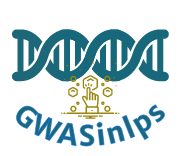

GWASinlps: Non-local Prior Based Iterative Variable Selection Tool for Genome-Wide Association Studies
GWASinlps performs Bayesian non-local prior based iterative variable selection for data from genome-Wide association studies (GWAS), or other high-dimensional data with continuous, binary or survival outcomes (see References below).
Installation
Install from CRAN
install.packages("GWASinlps")Install from GitHub
# install.packages("devtools")
devtools::install_github("nilotpalsanyal/GWASinlps")The main function:
GWASinlps() is the main function which accepts continuous or binary data (such as phenotype data) and a matrix with the independent variable values (SNP genotypes). The function also needs as input values for scaling parameter of the selected non-local prior and the tuning paramters. These should be fixed based on exploratory study and/or subject-specific heuristics. For example, in GWAS analysis, as the GWAS effect sizes are generally very small (typical effect size of a SNP is around 0.05% of the total phenotypic variance for quantitative traits), the scaling parameter can be chosen such that the non-local prior allows at least 1% chance of a standardized effect size being 0.05 or less in absolute value. Such estimates of the scaling parameter for the MOM and iMOM priors are 0.022 and 0.008, respectively.
Here is a simple illistration of the use the GWASinlps() function for both continous and binary phenotypes.
GWASinlps analysis with continuous data/phenotypes
library(GWASinlps)
#> Loading required package: mombf
#> Loading required package: mvtnorm
#> Loading required package: ncvreg
#> Loading required package: mgcv
#> Loading required package: nlme
#> This is mgcv 1.8-40. For overview type 'help("mgcv-package")'.
#>
#> Welcome to GWASinlps! Select well.
#>
#> Website: https://nilotpalsanyal.github.io/GWASinlps/
#> Bug report: https://github.com/nilotpalsanyal/GWASinlps/issues
# Generate design matrix (genotype matrix)
n = 200 #number of subjects
p = 10000 #number of variables/SNPs
m = 10 #number of true variables/causal SNPs
set.seed(1)
f = runif( p, .1, .2 ) #simulate minor allele frequency
x = matrix(nrow = n, ncol = p)
for(j in 1:p)
x[,j] = rbinom(n, 2, f[j]) #simulate genotypes
colnames(x) = 1:p
# Generate true effect sizes
causal_snps = sample(1:p, m)
beta = rep(0, p)
beta[causal_snps] = rnorm(m, mean = 0, sd = 2 )
# Generate continuous (phenotype) data
y = x %*% beta + rnorm(n, 0, 1)
# GWASinlps analysis
inlps <- GWASinlps(y=y, x=x, family="normal", prior="mom", tau=0.2,
k0=1, m=50, rxx=0.2)
#> =================================
#> Number of selected variables: 9
#> Time taken: 0.04 min
#> =================================
# LASSO analysis
library(glmnet)
#> Loading required package: Matrix
#> Loaded glmnet 4.1-4
fit.cvlasso = cv.glmnet( x, y, alpha = 1 )
l.min = fit.cvlasso $lambda.min # lambda that gives minimum cvm
l.1se = fit.cvlasso $lambda.1se # largest lambda such that error is
# within 1 se of the minimum
lasso_min = which( as.vector( coef( fit.cvlasso, s = l.min ) )[-1] != 0 )
lasso_1se = which( as.vector( coef( fit.cvlasso, s = l.1se ) )[-1] != 0 )
# Compare results
library(kableExtra)
res = matrix(nrow=3,ncol=3)
res[1,] = c(length(inlps$selected), length(intersect(inlps$selected, causal_snps)), length(setdiff(causal_snps, inlps$selected)) )
res[2,] = c(length(lasso_min), length(intersect(lasso_min, causal_snps)), length(setdiff(causal_snps, lasso_min)))
res[3,] = c(length(lasso_1se), length(intersect(lasso_1se, causal_snps)), length(setdiff(causal_snps, lasso_1se)))
colnames(res) = c("#Selected SNPs","#True positive","#False negative")
rownames(res) = c("GWASinlps", "LASSO min", "LASSO 1se")
kableExtra::kable(res, format="html",
table.attr= "style='width:60%;'",
caption=paste("<center>Variable selection from", p, " SNPs with", m, " causal SNPs for continuous phenotypes from", n, " subjects</center>"),
escape=FALSE) %>%
kableExtra::kable_styling() | #Selected SNPs | #True positive | #False negative | |
|---|---|---|---|
| GWASinlps | 9 | 8 | 2 |
| LASSO min | 190 | 8 | 2 |
| LASSO 1se | 44 | 8 | 2 |
GWASinlps analysis with binary data/phenotypes
library(GWASinlps)
library(fastglm)
#> Loading required package: bigmemory
# Generate design matrix (genotype matrix)
n = 500 #number of subjects
p = 2000 #number of variables/SNPs
m = 10 #number of true variables/SNPs
set.seed(1)
f = runif( p, .1, .2 ) #simulate minor allele frequency
x = matrix(nrow = n, ncol = p)
for(j in 1:p)
x[,j] = rbinom(n, 2, f[j]) #simulate genotypes
colnames(x) = 1:p
# Generate true effect sizes
causal_snps = sample(1:p, m)
beta = rep(0, p)
beta[causal_snps] = rnorm(m, mean = 0, sd = 2 )
# Generate binary (phenotype) data
prob = exp(x %*% beta)/(1 + exp(x %*% beta))
y = sapply(1:n, function(i)rbinom(1,1,prob[i]) )
# GWASinlps analysis
mode(x) = "double" #needed for fastglm() function below
mmle_xy = apply( x, 2, function(z) coef( fastglm(y=y,
x=cbind(1,matrix(z)), family = binomial(link = "logit")) )[2] )
#pre-compute MMLEs of betas as it takes time
inlps_rigorous <- GWASinlps(y=y, x=x, family="binomial", method="rigorous",
mmle_xy=mmle_xy, prior="mom", tau=0.2, k0=1, m=50, rxx=0.2)
#> =================================
#> Number of selected variables: 4
#> Time taken: 0.33 min
#> =================================
inlps_quick <- GWASinlps(y=y, x=x, family="binomial", method="quick",
mmle_xy=mmle_xy, prior="mom", tau=0.2, k0=1, m=50, rxx=0.2)
#> =================================
#> Number of selected variables: 8
#> Time taken: 0 min
#> =================================
# Lasso analysis
library(glmnet)
fit.cvlasso = cv.glmnet( x, y, family = "binomial", alpha = 1 )
l.min = fit.cvlasso $lambda.min # lambda that gives minimum cvm
l.1se = fit.cvlasso $lambda.1se # largest lambda such that error is
# within 1 se of the minimum
lasso_min = which( as.vector( coef( fit.cvlasso, s = l.min ) )[-1] != 0 )
lasso_1se = which( as.vector( coef( fit.cvlasso, s = l.1se ) )[-1] != 0 )
# Compare results
library(kableExtra)
res = matrix(nrow=4,ncol=3)
res[1,] = c(length(inlps_rigorous$selected), length(intersect(inlps_rigorous$selected, causal_snps)), length(setdiff(causal_snps, inlps_rigorous$selected)) )
res[2,] = c(length(inlps_quick$selected), length(intersect(inlps_quick$selected, causal_snps)), length(setdiff(causal_snps, inlps_quick$selected)) )
res[3,] = c(length(lasso_min), length(intersect(lasso_min, causal_snps)), length(setdiff(causal_snps, lasso_min)))
res[4,] = c(length(lasso_1se), length(intersect(lasso_1se, causal_snps)), length(setdiff(causal_snps, lasso_1se)))
colnames(res) = c("#Selected SNPs","#True positive","#False negative")
rownames(res) = c("GWASinlps rigorous", "GWASinlps quick", "LASSO min", "LASSO 1se")
kableExtra::kable(res, format="html",
table.attr= "style='width:60%;'",
caption=paste("<center>Variable selection from", p, " SNPs with", m, " causal SNPs for binary phenotypes from", n, " subjects</center>"),
escape=FALSE) %>%
kableExtra::kable_styling() | #Selected SNPs | #True positive | #False negative | |
|---|---|---|---|
| GWASinlps rigorous | 4 | 4 | 6 |
| GWASinlps quick | 8 | 4 | 6 |
| LASSO min | 20 | 5 | 5 |
| LASSO 1se | 6 | 4 | 6 |
References:
Nilotpal Sanyal, Min-Tzu Lo, Karolina Kauppi, Srdjan Djurovic, Ole A. Andreassen, Valen E. Johnson, and Chi-Hua Chen. “GWASinlps: non-local prior based iterative SNP selection tool for genome-wide association studies.” Bioinformatics 35, no. 1 (2019): 1-11. https://doi.org/10.1093/bioinformatics/bty472
Nilotpal Sanyal. “Iterative variable selection for high-dimensional data with binary outcomes.” arXiv preprint arXiv:2211.03190 (2022). https://arxiv.org/pdf/2211.03190.pdf